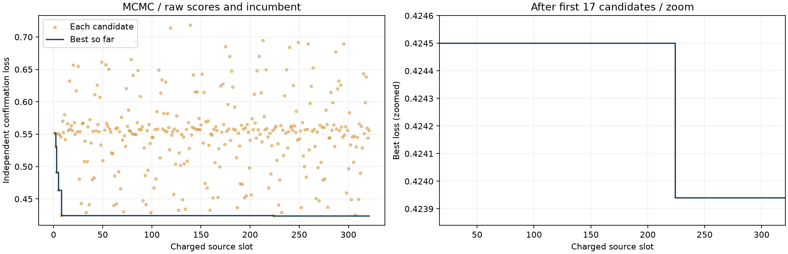
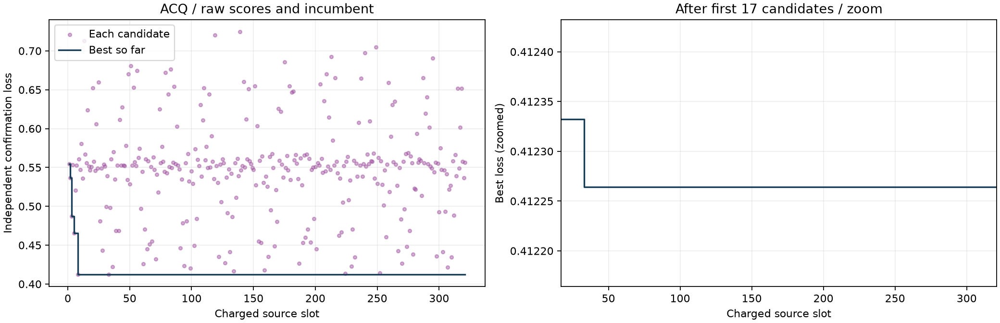
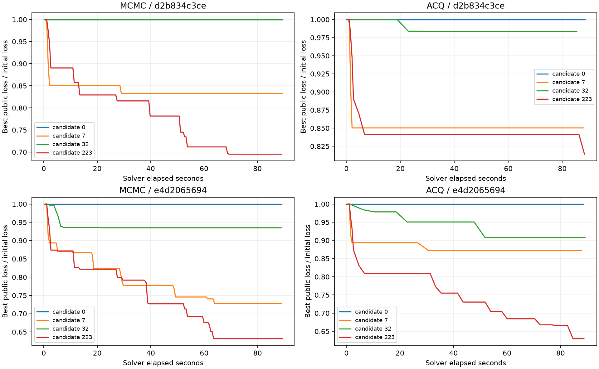

| 方法 | 前17候选最佳损失 | 最终最佳损失 | 后续相对降低 | 最后刷新所在候选序号 |
|---|---|---|---|---|
| MCMC | 0.424500598 | 0.423939946 | 0.1321% | 224 |
| ACQ | 0.412332218 | 0.412264040 | 0.0165% | 33 |
序号从1开始；MCMC最后刷新在第224个候选，ACQ在第33个候选。两种方法均有321组唯一参数、321个不同的训练分数。


| 方法 | 训练轨迹数 | 调用数中位数 | 接受率 | 提议无效率 | 几何不变率 | 启用采集的轨迹数 |
|---|---|---|---|---|---|---|
| MCMC | 15,408 | 112 | 67.0% | 0.0% | 1.06% | 0 |
| ACQ | 15,408 | 33 | 72.9% | 0.0% | 1.73% | 15,408 |
调用数包含初始状态评分。MCMC约82.4%的轨迹、ACQ约81.8%的轨迹改善了初始公开目标；内部公开目标相对改善的中位数分别为9.29%和6.98%。ACQ累计实际进行了477,353次采集选择。

内层示例固定使用训练清单前两个案例，以及预先列出的候选索引0、7、32、223（从0开始）。纵轴是公开求解目标相对初始值，与外层确认观测损失不是同一指标。
两种基线外层都执行提前冻结的Sobol超参数序列，后续配置不由上一批分数更新；每个配置独立运行48个训练案例。ACQ的代理模型和采集函数位于每次求解内部。原来的1+20×16只是候选计费与展示批次。
因此，这条线应读作“预设超参扫描的历史最佳”，不能读作“MCMC链或ACQ内层求解在后续时间完全停止优化”。
复算了两种方法各321份训练suite的确认观测聚合指标，与原结果全部一致；检查30,816条训练求解轨迹、全部候选源码摘要和参数对应关系。正式计划、结果、预算、选型与测试文件摘要保持不变；原r3的29份保护摘要也未变。无新求解、补评或重新选型。
MCMC-42包含1条已存在的失败作业收据，原失败保留；轨迹文件均可读取。完整诊断数据与保护文件摘要。